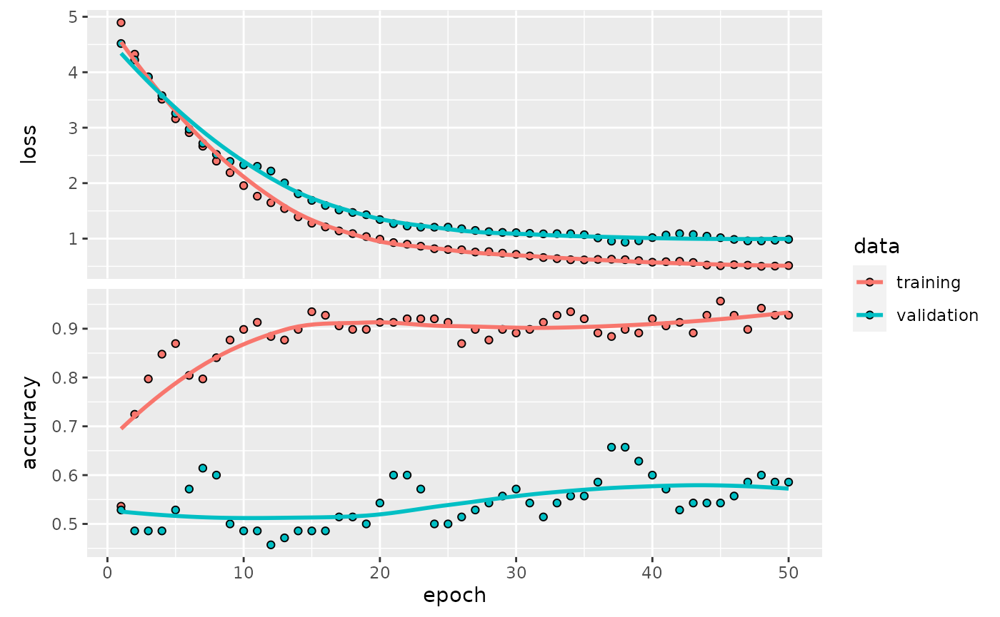
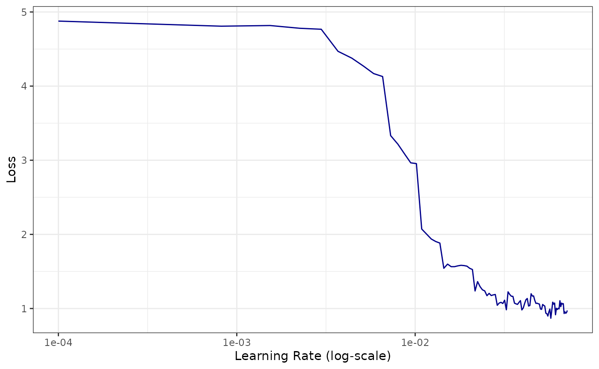

First steps with mlr3keras
Florian Pfisterer
2021-02-26
Source:vignettes/mlr3keras.Rmd
mlr3keras.RmdIntroduction to mlr3keras
This vignette assumes that the reader is familiar with either keras and at least basic aspects of deep learning.
If you are unfamiliar with keras and deep learning, several excellent ressources exist:
Keras R-package Homepage with a wide variety of examples
The Deep Learning Book and the Dive into Deep Learning book.
fast.ai offers a very comprehensive free 2-part online course on deep learning for coders.
Using mlr3keras
This vignette is used to showcase different aspects of mlr3keras. As mlr3keras is still under heavy development, this place might be a good way to look for currently working aspects of the package.
For other aspects, we aim to sketch proposed functionality in order to enable discussion.
mlr3keras in 5 lines
mlr3keras offers several pre-configured learner’s and model architectures. They can be used like any other Learner in mlr3.
# Instantiate Learner
lrn = LearnerClassifKerasFF$new()
# Set hyperparameters
lrn$param_set$values$epochs = 50
lrn$param_set$values$optimizer = optimizer_adam(lr = 0.01)
lrn$param_set$values$layer_units = c(32, 16)
# Train and predict
lrn$train(mlr_tasks$get("sonar"))
lrn$predict(mlr_tasks$get("sonar"))
#> <PredictionClassif> for 208 observations:
#> row_id truth response
#> 1 R M
#> 2 R M
#> 3 R M
#> ---
#> 206 M M
#> 207 M M
#> 208 M MA simple first example
This first simple example showcases how to use mlr3keras in its simplest form. We use it together with mlr3pipelines in order to fit a model on a dataset, in this case the pima classification Task with missing values.
Before we fit the model, we thus impute every missing variable using its mean.
Before we build up the pipeline, we define and compile the model we are going to use. This follows the keras API, see for example the RStudio Keras Documentation for details.
library("keras")
model = keras_model_sequential() %>%
layer_dense(units = 12L, input_shape = 8L, activation = "relu") %>%
layer_dense(units = 12L, activation = "relu") %>%
layer_dense(units = 1L, activation = "sigmoid") %>%
compile(optimizer = optimizer_adam(3*10^-4),
loss = "binary_crossentropy",
metrics = "accuracy")Afterwards, we build up the pipeline using the classif.keras learner. We set the model defined above as a hyperparameter, as well as the number of epochs we want to train our model for.
library(mlr3pipelines)
po_imp = PipeOpImputeMedian$new()
po_lrn = PipeOpLearner$new(lrn("classif.keras"))
po_lrn$param_set$values$model = model
po_lrn$param_set$values$epochs = 10L
pipe = po_imp %>>% po_lrnWe now have a finished Pipeline, which can be used, either as a Learner in conjunction with GraphLearner or simply to train and predict.
pipe$train(mlr_tasks$get("pima"))
#> $classif.keras.output
#> NULLor
l = GraphLearner$new(pipe)
l$train(mlr_tasks$get("pima"))The trained model gives us access to different methods for further inspection:
Utilities and plots
lrn$plot()
#> `geom_smooth()` using formula 'y ~ x'
lrn$lr_find(mlr_tasks$get("sonar"), epochs = 20L, batch_size = 32L)
lrn$save("nnet.hdf5")Tuning over model architectures
Consider the following scenario: We define multiple architectures, and now we aim to find out which architecture works best. As architecture designs very often can not be flattened to a table, but mlr3tuning expects a somewhat tabular space to optimize over, we create a function, that generates a keras model from our inputs.
Assume our architectures can be obtained from a function that looks as follows:
get_keras_model = function(arch = "arch1", lr = 3*10^-4) {
if (arch == "arch1") {
model = keras_model_sequential() %>%
layer_dense(units = 16L, input_shape = 10L, activation = "relu") %>%
layer_dense(units = 16L, activation = "relu") %>%
layer_dense(units = 1L, activation = "linear")
} else if (arch == "arch2") {
model = keras_model_sequential() %>%
layer_dense(units = 64L, input_shape = 10L, activation = "relu") %>%
layer_dense(units = 32L, activation = "relu") %>%
layer_dense(units = 1L, activation = "linear")
}
model %>%
compile(optimizer = optimizer_adam(lr),
loss = "binary_crossentropy",
metrics = "accuracy")
}And now we aim to select the better architecture between arch1 and arch2, and additionally a learning rate lr.
First we create a ParamSet we want to tune over: In order to work with arbitrary types, we have to use a little trick: Instead of using ParamUty, we create a ParamFct with a fixed set of levels. Afterwards we use a trafo in order to transform the ParamFct's levels to a keras model.
In the trafo we have to do two things: * Create a keras model from our arguments (i.e. arch and lr) * Delete the original arch and lr Parameters, as the keras learner does not know what to do with them.
library("paradox")
ps = ParamSet$new(list(
ParamFct$new("arch", levels = c("arch1", "arch2"), tags = "train"),
ParamDbl$new("lr", lower = 10^-5, upper = 10^-2, tags = "train")
))
ps$trafo = function(x, param_set) {
x$model = get_keras_model(x$arch, x$lr)
x$lr = x$arch = NULL # delete temp. params
return(x)
}Now we can tune over the architecture space like we are used to from mlr3tuning.
library("mlr3tuning")
learner = lrn("regr.keras", callbacks = list(cb_es(patience = 3)))
task = mlr_tasks$get("mtcars")
resampling = rsmp("holdout")
measure = msr("regr.mse")
tuner = tnr("grid_search", resolution = 2)
terminator = trm("evals", n_evals = 4)
instance = TuningInstanceSingleCrit$new(
task = task,
learner = learner,
resampling = resampling,
measure = measure,
search_space = ps,
terminator = terminator
)
tuner$optimize(instance)
#> arch lr learner_param_vals x_domain regr.mse
#> 1: arch2 0.01 <list[7]> <list[1]> 464.2743Entity Embeddings
Entity embeddings (Guo et al., 2016) are naturally embedded into the kerasff learners. Embeddings can be enabled in kerasffby setting the use_embeddings parameter to TRUE (default), settings can be adjusted via the embed_* hyperparameters.
Custom Optimizers & Activation Functions
In the example below, we will use the radam (rectified adam) optimizer in order to train our neural network. The goal here is to show, that custom optimizers, layers and activations can be integrated into mlr3keras seamlessly. We will first have to install the python package that contains the optimizer using pip or conda or py_install().
Afterwards we can check whether the package was successfully installed via:
library("reticulate")
py_module_available("keras_radam")Now we can import the optimizer and use it to train our learner.
CNN on Imagenette
Data was downloaded from here: fastai/imagenette and extracted to a directory. The imagepathdf_from_imagenet_dir function converts the folder structure to a data.table containing filepaths and associated classes. The path is converted to a character string of class imagepath internally, which enables mlr3 to recognize the character as an image path. This allows us to defer reading images into memory to keras, making large datasets manageable from within R.
library(mlr3)
library(mlr3misc)
library(data.table)
# dir is a path to the extracted images
dir = "~/Downloads/imagenette2-160/train"
dt = imagepathdf_from_imagenet_dir(dir)
t = TaskClassif$new(id = "imagenette", backend = dt, target="class")
dplyr::tibble(head(t$data()))Now we can train and predict using the LearnerClassifKerasCNN.
l = LearnerClassifKerasCNN$new()
l$param_set$values$epochs = 1L
l$param_set$values$application = keras::application_mobilenet
l$train(t$clone()$filter(1:128))
l$predict(t$clone()$filter(129:256))Reproducibility
The mlr3keras_set_seeds function allows for reproducibility of a given piece of code. Note, that reproducibility is notoriously difficult for neural networks, and therefore reproducibility can not always be guaranteed.
mlr3keras_set_seeds(seed = 1L)
# Instantiate Learner
lrn = LearnerClassifKerasFF$new()
# Set hyperparameters
lrn$param_set$values$epochs = 50
lrn$param_set$values$layer_units = c(12, 12)
lrn$param_set$values$validation_split = 0.2
# Train and predict
lrn$train(mlr_tasks$get("iris"))
lrn$predict(mlr_tasks$get("iris"))$score()
#> classif.ce
#> 0.6533333
lrn$model$history
#>
#> Final epoch (plot to see history):
#> loss: 1.581
#> accuracy: 0.4167
#> val_loss: 2.665
#> val_accuracy: 0.2333